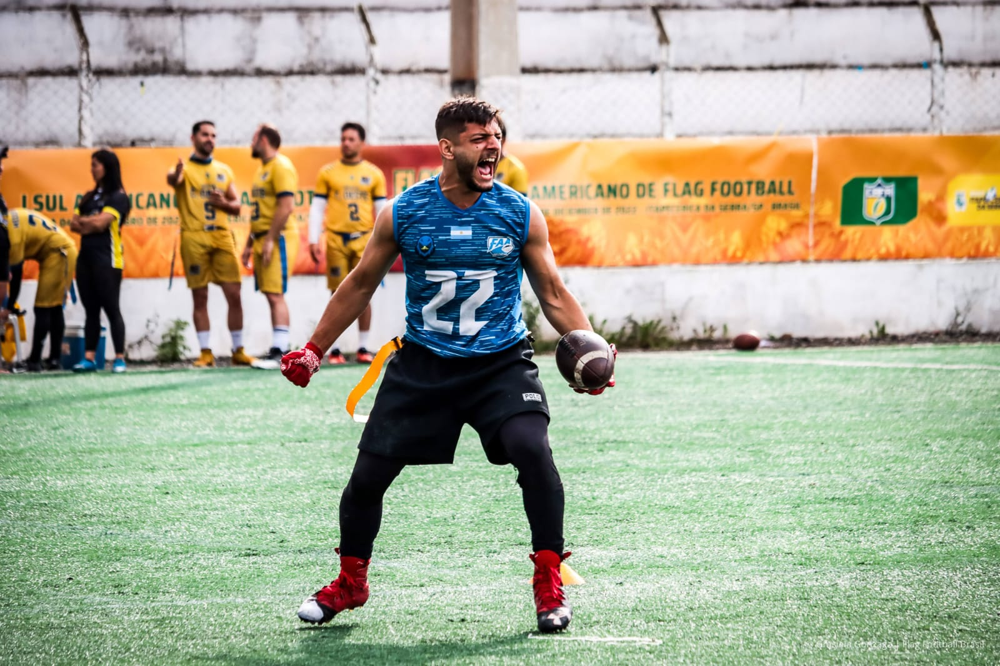

Noticias del deporte
En esta seccion encontraremos las noticias mas importantes del deporte tanto locales como en el resto del mundo.

Mar del Plata en Finlandia
Jugador Marplatense Inti Nahuel Sellares fue convocado a la seleccion Agentina de Flag-football para disputar el mundial en Finlandia.

Liebres se consagra Campeon en el Tazon del Mar
En su primera presentacion en el torneo Marplatense el equipo de Pinamar da el batacazo y se consagra campeon de la mano de una actuacion estelar de su QB Agustin Luporini.

Polemica entre el QB titular de la seleccion de flag y la NFL.
El quarterback Darrell Doucette puntualizó que ser estrella de la NFL no debería ser el único requisito para buscar la gloria olímpica.